2026학년도 결빛 네트워크 연계 구산 「CODE_Boost」 주말 코딩 캠프
엔트리 게임 프로젝트
운석을 피하고 맞히는
나만의 슈팅 게임
강사 · 부내초 교사 유경윤
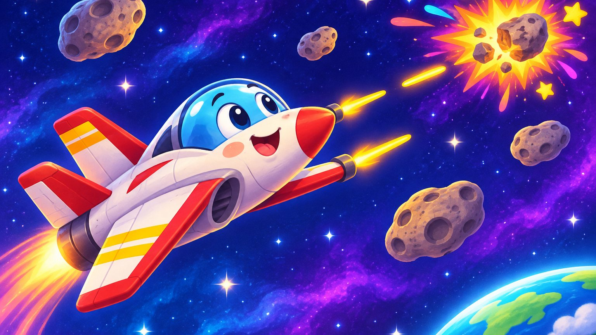
오늘 만들 게임
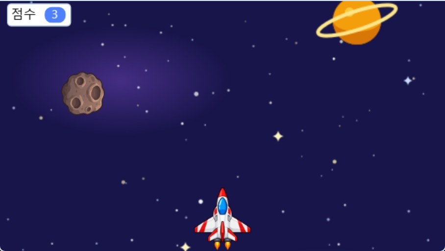
비행기 움직이기
총알 쏘기
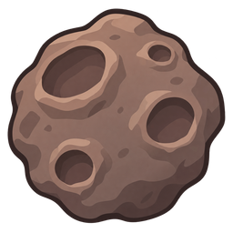
운석을 맞히면 점수 +1
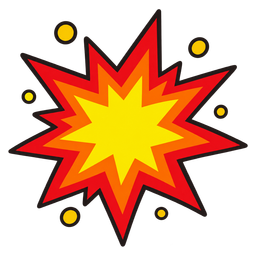
운석에 부딪히면 게임 끝!
오늘의 순서
1
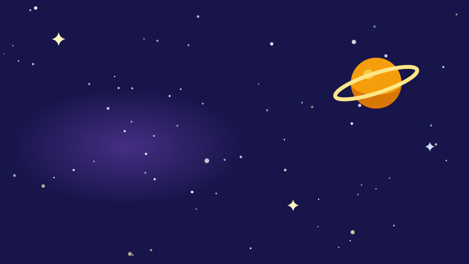
별이 아래로 흘러요
2
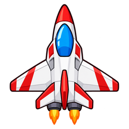
← → 키로 움직여요
3
부딪히면 게임 끝
4
스페이스로 발사
5
맞히면 점수 +1
단계가 끝날 때마다 ▶ 시작하기를 눌러 확인해요!
준비
시작 파일 (그림만 들어 있어요)
위 주소를 열면
start.ent 파일이
컴퓨터에 저장돼요
playentry.org에서
[만들기] →
[작품 만들기]
위쪽 [새로 만들기] 메뉴 →
[오프라인 작품 불러오기]
→ start.ent 고르기
준비
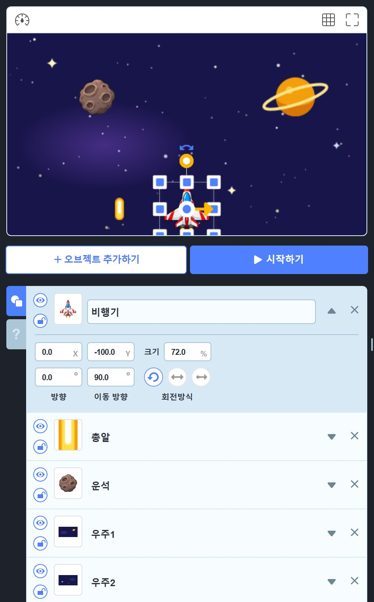
비행기 · 모양 2개 (비행기, 폭발)
총알 · 비행기가 쏘는 노란 총알
운석 · 모양 2개 (운석, 폭발)
우주1 · 우주2 · 이어 붙일 배경 두 장
오브젝트를 고르고 [모양] 탭을 누르면 모양 목록이 보여요
먼저 알아 둘 것
가운데가 (0, 0)
x는 오른쪽으로 갈수록 커져요
y는 위쪽으로 갈수록 커져요
무대 크기: 가로 480 · 세로 270
좌표 퀴즈
총알이 위로 날아가려면
y를 늘릴까요, 줄일까요?
운석이 아래로 떨어지려면
y를 늘릴까요, 줄일까요?
비행기가 왼쪽으로 가려면
x를 어떻게 바꿀까요?
1단계 · 배경 흐르기
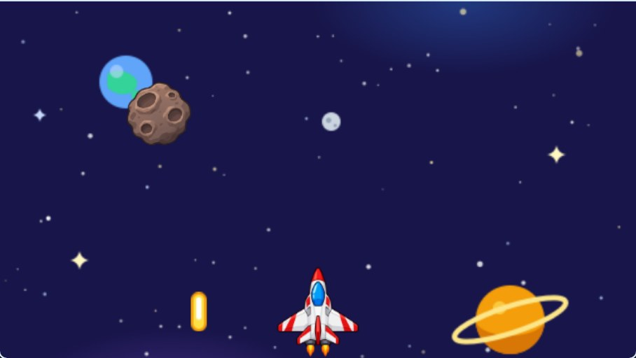
비행기는 그대로, 별이 아래로 지나가요
기차 안의 나는 가만히 앉아 있는데
창밖 나무가 뒤로 지나가면
내가 앞으로 가는 느낌이 들어요
게임도 똑같아요. 배경을 아래로 흘려 보내면
비행기가 위로 날아가는 것처럼 보여요
1단계 · 배경 흐르기
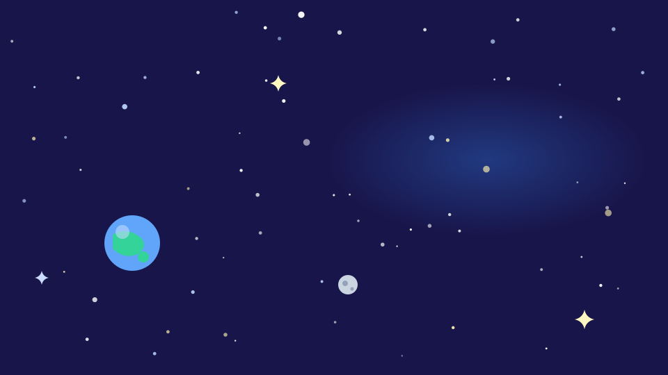
우주2 · y 270우주1은 화면에 딱 맞게 y 0
우주2는 그 바로 위에 y 270
270은 무대의 세로 길이예요.
두 장이 함께 아래로 2씩 내려가요.
한 장만 내려가면 위쪽이 텅 비어 버려요!
1단계 · 배경 흐르기
① 처음
② 우주1이 화면 아래로
③ 540 올려 보내요
y가 −270보다 작아지면 y를 540만큼 바꿔요 (270 + 270 = 540)
1단계 · 배경 흐르기
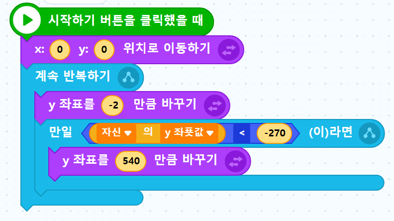
① 처음 자리는 (0, 0)
② 계속 아래로 2씩
③ −270보다 작아지면
540 올리기
1단계 · 배경 흐르기
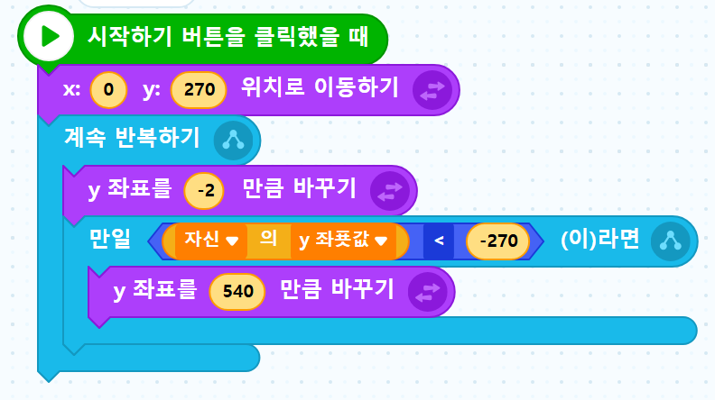
별이 아래로 흘러가나요? 배경 사이에 줄이 보이지 않나요?
2단계 · 비행기 움직이기
→ 키를 눌렀을 때
x 좌표를 6만큼 바꾸기
누를 때마다 한 번 움직여요.
꾹 누르면 멈칫했다가 움직여요.
계속 반복하기
만일 → 키가 눌러져 있는가?
x 좌표를 6만큼 바꾸기
계속 확인하다가 눌려 있으면 움직여요.
부드럽게 움직여요!
2단계 · 비행기 움직이기
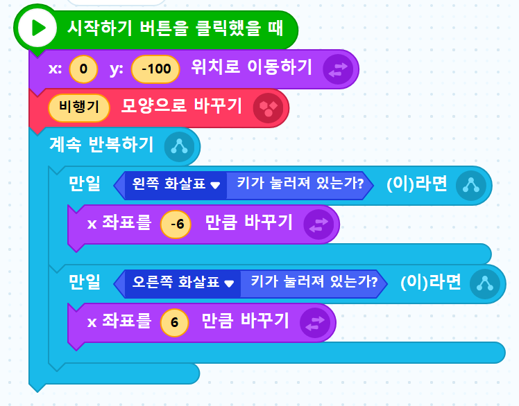
① 화면 아래 (0, −100)에서 출발
② 처음엔 비행기 모양으로
③ ← 는 x −6, → 는 x +6
2단계 · 비행기 움직이기
← → 키를 꾹 누르면
비행기가 부드럽게 움직이나요?
비행기를 더 빠르게
하려면 어디를 바꿀까요?
→ 를 눌렀는데 왼쪽으로 가요.
무엇이 잘못됐을까요?
3단계 · 운석 떨어뜨리기
숨어서 복제본만 만들어요
원본과 똑같은 코드로 각자 움직여요
운석을 하나하나 만들지 않고, 틀 하나로 여러 개 찍어 내요!
3단계 · 운석 떨어뜨리기
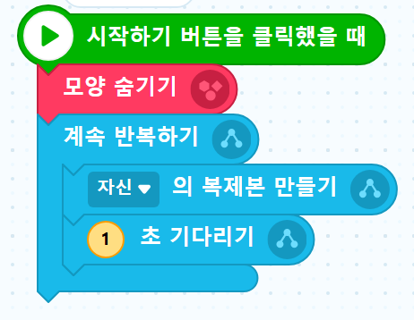
① 원본은 모양 숨기기
② 1초마다 복제본 만들기
원본은 공장이에요. 직접 떨어지지 않아요.
3단계 · 운석 떨어뜨리기
1
화면 위쪽
아무 자리에서
2
원본이 숨어 있어서
복제본도 숨어 있어요
3
y를 −3씩
빙글빙글 돌면서
4
아래쪽 벽에 닿으면
복제본 삭제
시작 블록: 복제본이 처음 생성되었을 때
3단계 · 운석 떨어뜨리기
-220 부터 220 사이의 무작위 수
실행할 때마다 다른 수가 나와요
y는 160: 화면(135)보다
조금 더 위에서 시작해요
3단계 · 운석 떨어뜨리기
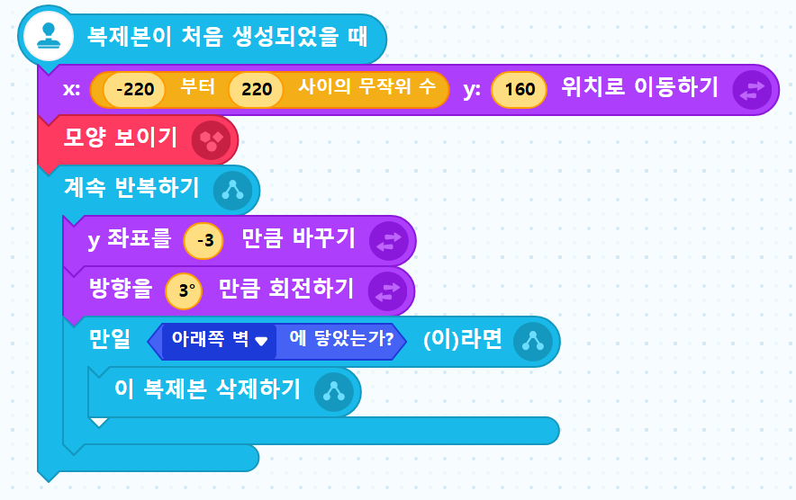
① 무작위 자리로
② 모양 보이기
③ 아래로 3, 3° 회전
④ 아래쪽 벽 → 삭제
3단계 · 운석 떨어뜨리기
1초
운석 1개
1분
운석 60개
10분
운석 600개
화면 밖으로 나간 운석도 지우지 않으면 계속 남아서 움직여요.
점점 많아지면 컴퓨터가 느려져요. 다 쓴 복제본은 꼭 지워요!
3단계 · 운석 떨어뜨리기
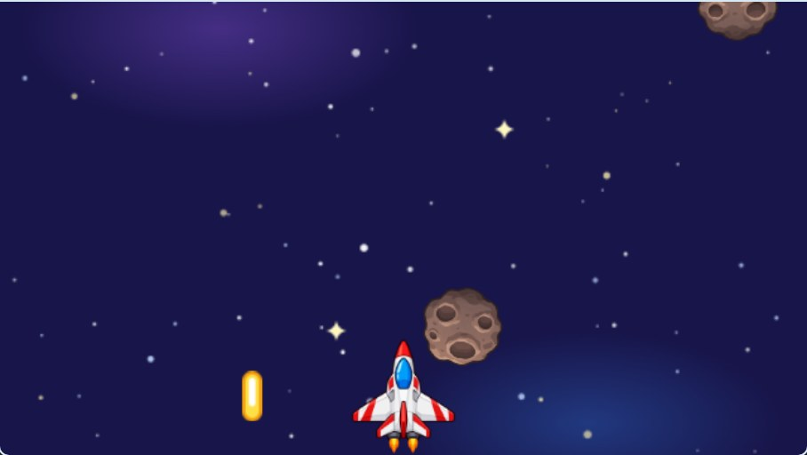
운석이 위에서 나타나요
빙글빙글 돌며 떨어져요
나올 때마다 자리가 달라요
바닥에서 사라져요
비행기에 닿아도 아직 아무 일 없어요
3단계 · 운석 떨어뜨리기
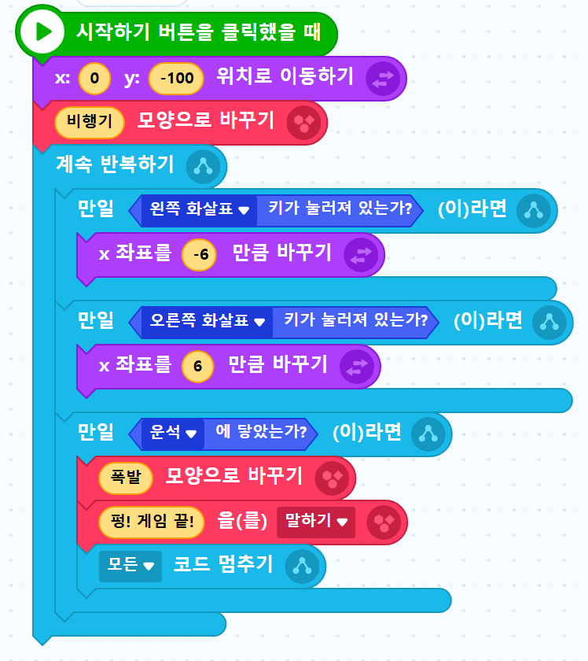
비행기 반복 안에 만일 하나 더!
① 폭발 모양으로
② "펑! 게임 끝!" 말하기
③ 모든 코드 멈추기
3단계 · 운석 떨어뜨리기
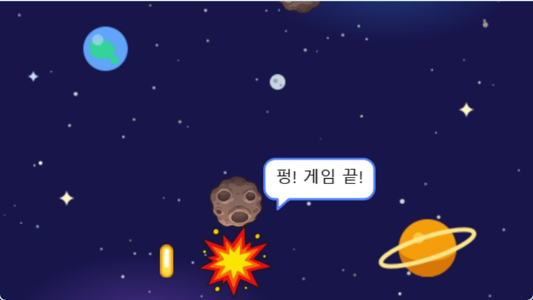
여기까지만 해도
진짜 게임이에요!
누가 더 오래 버틸까요?
4단계 · 총알 쏘기
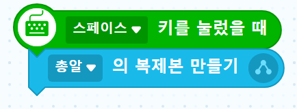
비행기 오브젝트에 넣어요
누를 때마다 총알 한 발
이번엔 키를 눌렀을 때 블록이 딱 맞아요.
(13번에서 본 방법 A)
총알의 복제본이 날아가요
4단계 · 총알 쏘기
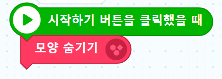
운석 공장과 똑같아요!
원본 총알은 숨어 있고,
스페이스를 누를 때마다 복제본이 날아가요.
4단계 · 총알 쏘기
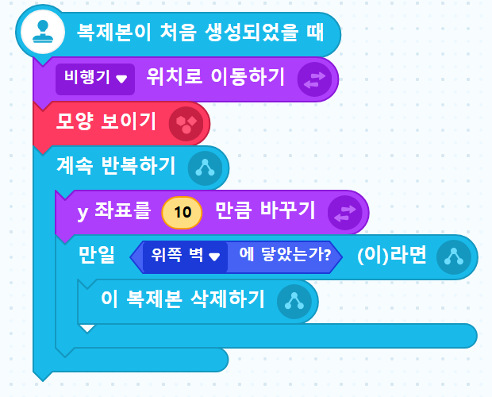
① 비행기 위치로 이동
② 모양 보이기
③ 위로 10씩 (운석보다 빨라요)
④ 위쪽 벽에 닿으면 삭제
4단계 · 총알 쏘기
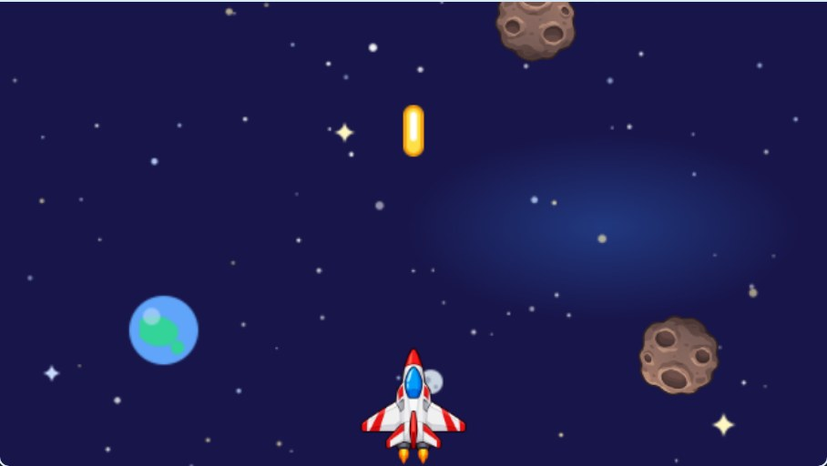
비행기에서 총알이 나가요
위로 날아가 사라져요
총알이 운석에 닿으면?
그냥 지나가요!
5단계 · 점수와 버그 잡기
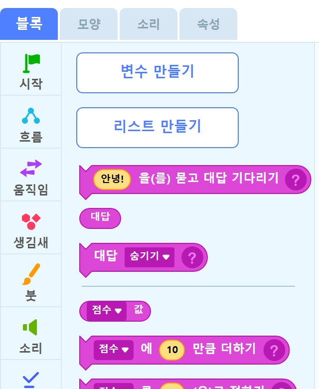
변수 = 값을 담는 상자
① [블록] 탭 → [자료]
② [변수 만들기]
③ 이름: 점수 → 확인
무대 왼쪽 위에 "점수 0"이 보이면 성공!
5단계 · 점수와 버그 잡기
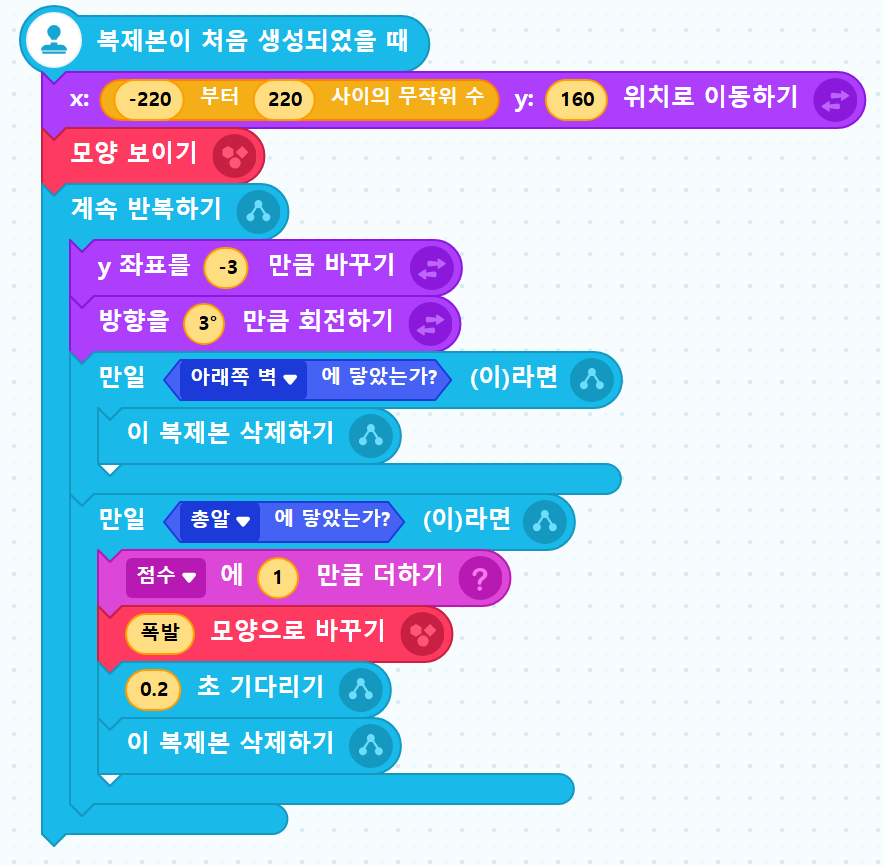
운석 복제본 반복 안에 추가
① 점수 +1
② 폭발 모양으로
③ 0.2초 보여 주고
④ 삭제
5단계 · 점수와 버그 잡기
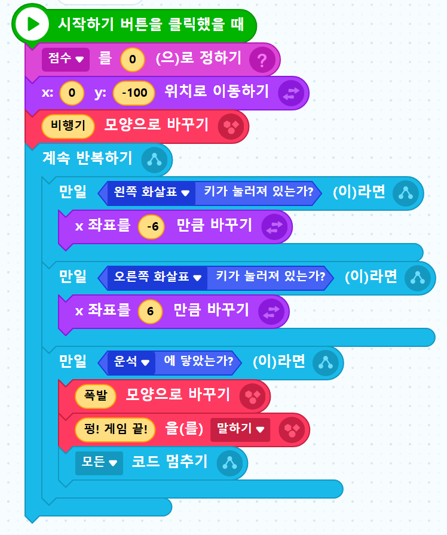
비행기 코드 맨 위에
점수를 0으로 정하기
이 블록이 없으면
다시 시작할 때 어떻게 될까요?
5단계 · 점수와 버그 잡기
운석은 터지는데
총알은 계속 날아가요
한 발로 운석 여러 개를 맞힐 수도 있어요
총알도 운석에 닿으면 지우면 되겠죠?
5단계 · 점수와 버그 잡기
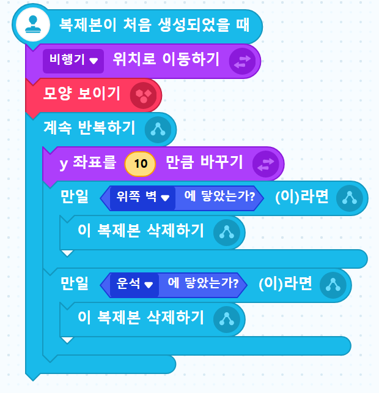
총알에 이렇게 넣고 실행하면…
총알은 사라지는데
운석은 그대로 내려와요!
점수도 거의 안 올라요. 왜 그럴까요?
5단계 · 점수와 버그 잡기
키를 확인하고 움직여요
위로 10 → 운석에 닿았다!
바로 사라짐
"총알에 닿았나?"
→ 총알이 없어요!
숨바꼭질에서 술래가 보기 전에 친구가 숨어 버리면 못 찾는 것과 같아요.
5단계 · 점수와 버그 잡기
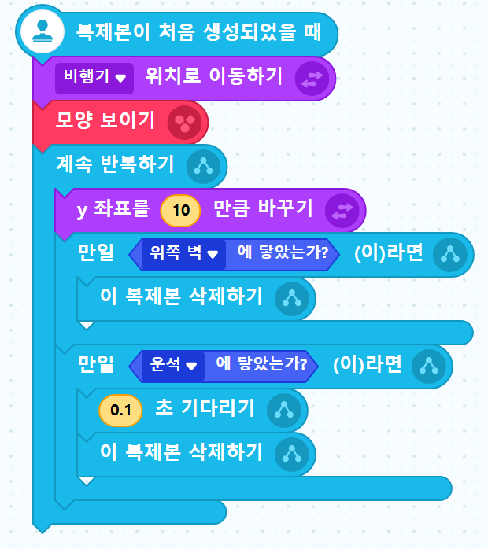
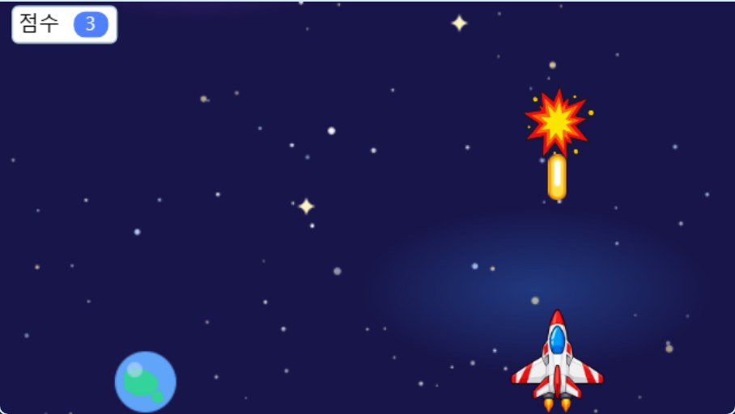
총알이 0.1초 남아 있으면
운석이 총알을 보고 펑!
완성!
별이 아래로 흘러요
← → 로 비행기가 움직여요
운석이 여기저기서 떨어져요
스페이스로 총알을 쏴요
맞히면 펑! 점수 +1
부딪히면 게임 끝, 다시 하면 점수 0
막혔을 때
| 배경 사이에 줄이 보여요 | → −270, 540, 우주2의 처음 y 270 |
| 비행기가 안 움직여요 | → 만일 블록이 계속 반복 안에 있나요? |
| 운석이 안 보여요 | → 복제본 코드에 모양 보이기 |
| 운석이 위로 올라가요 | → y 좌표를 −3 (빼기!) |
| 총알이 엉뚱한 곳에서 나와요 | → 비행기 위치로 이동하기 |
| 점수가 안 올라요 | → 운석 코드의 총알에 닿았는가? |
그래도 안 되면 단계 파일로 이어서 해요: files/step1~4.ent
도전 과제
운석의 −3 자리에
-3 − (점수 ÷ 10)
점수가 10점 오를 때마다 1씩 빨라져요
"생명" 변수를 3으로.
부딪히면 1 빼고,
0이 되면 게임 끝!
↑ ↓ 키로 y도 움직이기.
화면 밖으로 못 나가게
막아 볼까요?
[소리] 탭에서
총알·폭발 소리를 골라
소리 재생하기
오늘 배운 것
좌표
반복과 조건
복제본
변수
버그 잡기